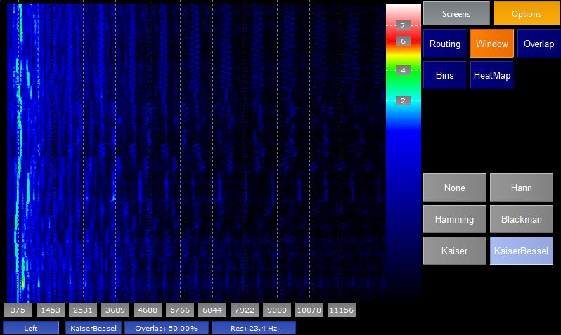

The Specto plugin shows a Spectogram of a channel of the incoming audio. The x-axis of the screen shows the frequencies of the audio, the y-axis shows time (lastest time at the bottom of the screen and going back in time towards the top). The colour of the dots on the screen shows the amplitude of the frequency at that point in time.
The right hand side of the screen shows how the colours relate to the PPM scale.
The blue labels at the bottom show

The plugin shows the Spectogram for a single channel of audio. The Routing options page allows you to select which channel you wish to analyse.
In stereo mode the user is also allowed to select
The 1st blue label shows the current routing.

When performing spectrum analysis of live audio the incoming audio must be split in to chunks of data and each individually analysised. This can cause "spectral leakage". Therefore a windowing function is usually applied to the chunks of audio to smooth the edges of each window. There are a number of different windowing functions available, all of which give slightly different characteristics to the resultant frequency response. See here for more information.
The 2nd blue label shows the current windowing function.

Another way of making the spectrum analysis more accurate when dealing with chunks of live audio is by overlapping each chunk of audio. This page allows the user to decide how much he wants this overlap to be.
The 3rd blue label shows the amount of overlap.

When performing an FFT on audio the result is split in to a number of "bins" each a certain frequency wide. The more bins that you use the narrower each bin and hence the better the frequency resolution. However more bins means that you need to read in more audio before you can perform the FFT and so the refresh rate is slower. This page allows the user to choose the frequency resolution he wants.
As the Spectogram always plots 1 dot per bin more bins means better resolution but a lower frequency cutoff point.
The 4th blue label shows the current resolution.

The HeatMap Option page allows the user to decide what colours should map to what frequency amplitudes: